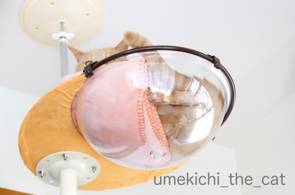
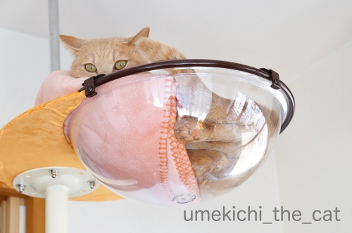
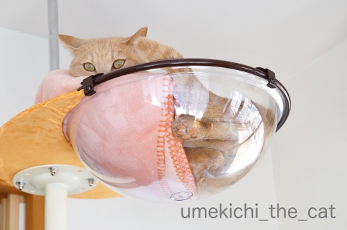

見えないところがあるのが楽しい♪ [梅吉]

クリアハンモックには入ったり入らなかったりを繰り返しております。
この日は寝ようと横になったらブランケットが大幅にずれちゃった様です。
本ニャンは全く気にしてないようですがw

全身ではありませんがよく見えます！
（ボールが光っちゃってますね・・・）

うぉぉぉぉぉぉ〜0(≧▽≦)0
良いではないですか！お手手まで見えてると完璧なんだけど・・・
と伸び代的なところがあるのが余計に良い感じ？
今後に期待が膨らみます。

毛がうねうねっとなっているだけでも興奮しちゃいますよ(*>艸<)
ここで香箱を組んでもらうのが目標ですが
おちりを押し付けて座ってそれが「むぎゅっ♡」と見えたりしたら・・・
そんなこんな様々のシチュエーションを想像して猫変態はひとりニヤニヤするのでした0(≧▽≦)0

こんなふうにステップに座ってくつろぐ様にもなりました＾＾
･゜ﾟ･*:.｡..｡.:*･゜ﾟ･*:.｡. .｡.:*･゜ﾟ･*･゜ﾟ･*:.｡..｡.:*･゜ﾟ･*:.｡..｡.:*･゜ﾟ･*
みなさまご存知新元号「令和」発表の瞬間。
あの瞬間が菅官房長官とクラプトンのコラボに！！
おっとが教えてくれましたよ。
菅さんが淡々としてるのが余計に笑えますwww
奇跡の瞬間、是非是非音を出してご覧ください＾＾
蛇足かと思いますが・・・
この曲はEric Claptonの名曲『Layla』（レイラ）です。
「れいわ」では無いのですよ(*>艸<)
 ↑ガブッと一押し↑
↑ガブッと一押し↑
4月3日、ちょっと足を伸ばしてお花見してきました。
大阪府内、狭山市の狭山池公園です。
池の写真が無いのですが（笑）大きなため池の周りが遊歩道と桜並木になってます。
正確な築造年は定かではないのですが日本で最古のダム式ため池と言われていて
古事記、日本書紀にも狭山池の名前が登場するそうですよ。
改修も何度となく行われていて、その歴史の中には行基の名前も見られます。
奥にどーんとそびえるのは公園に隣接する博物館。
今回は見に行かなかったのですが機会があったら覗いてみたい。
アプローチに『入り口はこちら』と矢印があるようなのですがそれが延々と続いて・・・
「なかなか入り口までたどり着けなくて不安になった」なんて言われている建物です(*>艸<)
かなり大きいのでしょうねw
ちなみに設計は安藤忠雄さん。
桜のトンネルー！
空が青くて気持ち良さそうに見えますがめっちゃ寒くて・・・
本当はお弁当を持って行くつもりだったのですが予想最高気温が12℃だったので諦めました。
水を渡る風はさらに冷たくて歩いていても凍えそう。
お弁当持って行かなくてよかった。
寒いけど桜は満開！
ここの桜は「コシノヒガン」という早咲きのもの。
大阪で一番先に花見ができる公園を目指したのだとか。
ユキヤナギとの共演も見応えがありました。
レンギョウ、ユキヤナギと三色の風景。
今年一回目のお花見は手短に終了。
今週末は念願のお弁当を持ってお花見に行きましたよー。
その模様は次回アップしますね。
クリアハンモックには入ったり入らなかったりを繰り返しております。
この日は寝ようと横になったらブランケットが大幅にずれちゃった様です。
本ニャンは全く気にしてないようですがw

全身ではありませんがよく見えます！
（ボールが光っちゃってますね・・・）
うぉぉぉぉぉぉ〜0(≧▽≦)0
良いではないですか！お手手まで見えてると完璧なんだけど・・・
と伸び代的なところがあるのが余計に良い感じ？
今後に期待が膨らみます。
毛がうねうねっとなっているだけでも興奮しちゃいますよ(*>艸<)
ここで香箱を組んでもらうのが目標ですが
おちりを押し付けて座ってそれが「むぎゅっ♡」と見えたりしたら・・・
そんなこんな様々のシチュエーションを想像して猫変態はひとりニヤニヤするのでした0(≧▽≦)0
こんなふうにステップに座ってくつろぐ様にもなりました＾＾
･゜ﾟ･*:.｡..｡.:*･゜ﾟ･*:.｡. .｡.:*･゜ﾟ･*･゜ﾟ･*:.｡..｡.:*･゜ﾟ･*:.｡..｡.:*･゜ﾟ･*
みなさまご存知新元号「令和」発表の瞬間。
あの瞬間が菅官房長官とクラプトンのコラボに！！
おっとが教えてくれましたよ。
菅さんが淡々としてるのが余計に笑えますwww
奇跡の瞬間、是非是非音を出してご覧ください＾＾
蛇足かと思いますが・・・
この曲はEric Claptonの名曲『Layla』（レイラ）です。
「れいわ」では無いのですよ(*>艸<)
4月3日、ちょっと足を伸ばしてお花見してきました。
大阪府内、狭山市の狭山池公園です。
池の写真が無いのですが（笑）大きなため池の周りが遊歩道と桜並木になってます。
正確な築造年は定かではないのですが日本で最古のダム式ため池と言われていて
古事記、日本書紀にも狭山池の名前が登場するそうですよ。
改修も何度となく行われていて、その歴史の中には行基の名前も見られます。
奥にどーんとそびえるのは公園に隣接する博物館。
今回は見に行かなかったのですが機会があったら覗いてみたい。
アプローチに『入り口はこちら』と矢印があるようなのですがそれが延々と続いて・・・
「なかなか入り口までたどり着けなくて不安になった」なんて言われている建物です(*>艸<)
かなり大きいのでしょうねw
ちなみに設計は安藤忠雄さん。
桜のトンネルー！
空が青くて気持ち良さそうに見えますがめっちゃ寒くて・・・
本当はお弁当を持って行くつもりだったのですが予想最高気温が12℃だったので諦めました。
水を渡る風はさらに冷たくて歩いていても凍えそう。
お弁当持って行かなくてよかった。
寒いけど桜は満開！
ここの桜は「コシノヒガン」という早咲きのもの。
大阪で一番先に花見ができる公園を目指したのだとか。
ユキヤナギとの共演も見応えがありました。
レンギョウ、ユキヤナギと三色の風景。
今年一回目のお花見は手短に終了。
今週末は念願のお弁当を持ってお花見に行きましたよー。
その模様は次回アップしますね。

カフェオレ色の梅吉

梅吉 2023年8月10日 永眠


梅吉と出会った譲渡会

犬猫の理由なき殺処分ゼロ
妄想広告
UMEKICHI 光

爆発的に早い！
時々攻撃的！
Thanks to Mr.Boss365
爆発的に早い！
時々攻撃的！
Thanks to Mr.Boss365

ああ、あ~。後足とおちりがっ!! か、可愛い!
"レイワ"は好きな曲です。これで見るとどうしてもレイワに聞こえる。なんでー?
by zombiekong (2019-04-08 00:58)
これは楽しいですね！クリアハンモックから見える様子がめっちゃかわいくてニマニマしちゃいますねー。
2枚目のクリアハンモックの上からのぞいているお目々もいいですねー。
まだまだいろんな様子を見せてくれそうで、今後に期待しちゃいます。
♪レイワ〜♪ いやー、これからこの曲聞いたら絶対、レイワになっちゃう。
そうそう、メインPCのWindowsからは令和が一発変換されるのですが、サブPCのMacは出ませんーー。
桜、きれいです！人が通れるトンネルってところがいいですね。
桜の木が低いからまだ若い木なのでしょうか。
うちのあたりは街路樹なので、通行の邪魔にならないように枝が伐採されてしまう年があって、木がなんか不恰好なのです。
ユキヤナギとのコラボも見事！すばらしいですねぇーー。
by ChatBleu (2019-04-08 06:16)
この曲面で香箱は苦しいかもしれませんね。
背中がエビ反りになって猫背矯正（爆）
by ぽちの輔 (2019-04-08 07:03)
梅吉さんのムニュッとしたお尻が可愛いですね(^^)
言われてみると、令和がLaylaにばっちりコラボしていますね。
好きな曲だけに頭から離れません！
by kou (2019-04-08 07:30)
クリアハンモックにいる梅吉さんを
いろいろな角度からニマニマして
見てしまいそうです(#^.^#)
可愛過ぎですねぇ～♪
おぉ～桜！！
見事です！こちらはそろそろ終わりかけです(;^_^A
by きぃ (2019-04-08 07:54)
毛布がずれたのが幸い♪(笑)
肉球が見えますね～(≧∀≦)
毛がうねっているのもいいっ(笑)
確かに香箱つくってもらうのが一番ですね！
楽しみです(ΦωΦ)ふふふ
桜！！すごい！！トンネルを歩きたいです♪
でも12度の日だったのですね。お風邪大丈夫でしたか？
ゆっくり愛でたいのですが、か、花粉が(/ω＼)
車窓から楽しみました、私＾＾
by カトリーヌ (2019-04-08 10:25)
こんにちは。
ブランケットがズレて、梅吉君！！お尻冷たそうなお顔してます？
クリアハンモック！！梅吉君よりちぃさんの方が楽しんでますね（笑）
猫変態？炸裂のコメントを小生は楽しんでします（笑）
「Layla」誰かがブログでやりそうなので控えていました（笑）
来日も近いので話題になりそう？
博物館！！外観に奇抜さはない感じですが・・・
書籍等では安藤忠雄さんらしい幻想的な空間になっていますね。リアルに見たい。
花見？寒かったみたいですが、素晴らしい桜並木です。
混雑もない感じで良い写真が撮れた印象です！？(=^･ｪ･^=)
by Boss365 (2019-04-08 10:30)
ピンクの肉球が・・・むぎゅっとなった毛並みが(*^_^*)
これはもう萌えまくりですねぇ(^_^)v
うちもでかいにゃんこ用のクリアボールがあれば
絶対に買うのに(>_<)→入らない可能性は考えないｗ
普段は見られないこういう姿が見られると
いつまでも眺めてあっという間に時間が過ぎそうです(^^;)
by ニッキー (2019-04-08 12:28)
お～お～お～っ♪
むぎゅ～っと押し付けられてうねる毛並みがいですね！
平らなアクリル板、探してみましたがやはりサイズが合わず・・・。
きっちり測ってホームセンターで加工してもらおうかな？！
香箱とか、ごめん寝などの期待が高まります(#^^#)
狭山池公園行ったことないですが、早咲きの桜がキレイですね♪
何より人混みや宴会のブルーシートが敷き詰められていないのがいいです^^;
by ゆきち (2019-04-08 12:35)
お弁当、楽しみだなぁ〜 ^ ^
by 小松達也 (2019-04-08 14:22)
下から猫の生態を覗けるのはいいよね（ﾟ□ﾟ）
菅さんは「令和おじさん」と呼ばれるようになるね（ﾟ□ﾟ）
桜も綺麗だね、私は土曜日にお花見に行ったけど桜の写真はほとんど撮らなかった（ﾟ□ﾟ）
まぁ、花より団子だからいいんだけどね（ﾟ□ﾟ）
by 英ちゃん (2019-04-08 17:53)
ニャンコはクリアハンモックがお気に入りなんですね。
満開の桜は見応えがありますね。今日爺も花見してきました。
令和・より官房長官は自分の姿優先みたいですね。
by 旅爺さん (2019-04-08 17:56)
うひゃー、待ってましたーーー！
どの写真も保存版ですねえ。
そして年号。もう「レイラ」って言っちゃいそうです。
by liang (2019-04-08 20:24)
クリアハンモックにどんな体勢で佇んでいるか、毎日が楽しみになりますね。^^)
菅官房長官とクラプトン、そういうことなのですね。
でも「いとしのレイラ」って確か、ジョージハリスンの。。。^^;
桜のお写真きれいですね。
現在こちらでは強風が吹いていて、桜の花が吹き飛んじゃいそうです。
by yes_hama (2019-04-08 21:37)
肉球三昧！！いいですね。いいですよ！梅吉く~ん(≧▽≦)
by palpal (2019-04-08 21:47)
梅吉さんが色っぽく見えます^^;
「愛しのレイラ」はもう何百回と聴きました。
あんなにカッコいい曲は無いです。名曲です＾＾
by riverwalk (2019-04-08 21:56)
梅吉さんを下から見放題ですね！
今日は岡山の後楽園に行きましたが桜が満開でした(^^)
愛しのレイラはエレキで弾けます。
by ma2ma2 (2019-04-08 22:10)
クリアハンモック 慣れて良い感じになりましたね
気温が上がると 透明な部分だけで見れるかなぁ
by (。・_・。)２ｋ (2019-04-08 22:58)
ちぃ様に教えて頂いた動画があまりにも面白く
3回繰り返して見て爆笑しました(@^▽^@)。
そろそろ来る、とじらされるのがたまらない！
来日も間近ですし、空耳アワーに登場しそう。
こちらに伺う前に自分のブログに転載させて
頂いてしまいました・・ｽﾐﾏｾﾝ（ｍ－－ｍ）。
さすがスパイ組織に関わるちぃ様おっと様、
情報収集能力が半端ないですね。。（＠＠）
大阪にも狭山市があるとは・・見事な桜です！
by うりくま (2019-04-08 23:15)
クリアハンモック、たとえ光っていても
梅吉くんは明るい毛色の子だからいいよねー。
うちのなんてグレーだから、ほんっと汚く見えるよ(笑)
狭山池公園いいところですね！
行基さんの名前がココにも(笑)
カレはホントは複数いたんじゃないか？ってくらい日本各地に名前が出てきますね(笑)
その博物館、めっちゃ興味あるわ。どんなものがあるんだろうね^^
そしてなんといっても、桜の街道。トンネルが美しい〜〜〜
by リュカ (2019-04-09 11:53)
梅吉くん、徐々に使いこなしてきてるのね。
これ、夏場になったらひんやりして気持ちよさそうだから
あんな姿やこんな姿が見れるかもしれないね(*ﾉωﾉ)
by emi (2019-04-09 20:33)
梅さまなんだか楽しそう♪^^
でもきっと、おしりは温かいブランケットが欲しいですよね^^;
ぎゅーって圧がかかると巻き毛になるんですね♡（*´∀｀*）
桜、きれいですね^^
おぉ、ユキヤナギとの競演！白とピンクと青、最高ですね。
博物館と梅田駅、どっちが攻略難しいですかね（笑）
というか、「レーイワァ！♪」がインパクト強すぎて・・・( ͡° ͜ʖ ͡°)
by Ja-Kou66 (2019-04-10 00:19)
梅吉さん、ｶﾜ(・∀・)ｲｲ!!肉球最高です。
by ニコニコファイト (2019-04-10 07:03)
レイラー♪は笑えるー(≧∀≦)
クラプトンも苦笑いしてるはず！！
お花見、私も土日とも出かけましたー。
あったかくて最高でしたよ。
by よーちゃん (2019-04-10 08:39)
後ろ足の肉球と毛のねじれが可愛い～＾＾
こっちを見ているおめめもいいわ～♪
楽しみが増えましたね！
レイラー！ 令和にしか聞こえない‥
だんだん盛り上がって感情こもってるのがなんとも＾＾
桜の大木、満開で見事ですね。
行基さんが作ったとか補修したとか？歴史がありますね～＾＾
by sana (2019-04-10 15:36)
zobiekongさん＞
後ろ足とおちりでこれだけ可愛いのに手が見えたら・・・
ふふふ (=ΦwΦ=)楽しみにしてて下さいねー！
私もも「レイワ」にしか聞こえませんwww
クラプトン、今週末から東京公演ですよね＾＾
何かが起こりそうな予感(≧▽≦)
ChatBleuさん＞
あ！覗くお目目に気づいていただけましたか＾＾
私もこの「キロッ」とした目がお気に入りです！
クリアハンモック、小出しに色んな事をしてくれるので
飼い主の期待も高まってます。
えっ！Windowsは「令和」一発変換ですか！素早い！！
ビジネス用途に対応すべくなのでしょうね。
Macは何時になるかわからないので単語登録しちゃいましたwww
桜のトンネル、木も小ぶりだし遊歩道だし何より寒い日の平日だったので
人も少なめで寒い事以外は満喫できましたー＾＾
木もまだ若くて元気なのでしょうね。色んな意味で旬な公園？0(≧▽≦)0
ぽちの輔さん＞
やけに姿勢の良い梅吉を想像して爆笑ですwww
kouさん＞
タダでさえ可愛いお尻がムニュッ！と。
しばらくニヤニヤと見上げていましたよ(*>艸<)
レイラ＝令和の語感もそうですが
曲とぴったりマッチした菅さんの動きも爆笑でしたwww
いえ、動画を作った人がお上手なんですけど。
きぃさん＞
下から見てよし、自撮り棒にスマホを取り付けて
クリアハンモックに入っている梅吉を上から観察するもよし・・・
自撮り棒なんで全然使ってなかったのに
最近活躍のアイテムとなりました(*>艸<)
色んな角度から見られて楽しー！！
桜は我が家の近所では一昨日が満開って感じでした。
関西は風が強かったし雨も降ったし
ソメイヨシノは今週末までもたないかも、です。
カトリーヌさん＞
毛布、梅吉がサービスしようとわざとにずらしたのか、
と思いましたよ(*>艸<)
クリアハンモック越しに見ると全てが新鮮で
梅吉の一挙手一投足を重大な関心を持って見守っておりますw
あああ、カトリーヌさんも花粉症でいらっしゃいましたか・・・
車から眺めるのが安全・安心ですねー！
ヒノキ花粉の季節ももう少し、がんばれー0(≧▽≦)0
風邪はぶり返したらたまらないわ、とお花見時は厚着して
一枚余計に羽織るものを持って行ったので大丈夫でした＾＾
お気遣いありがとうございます。
Boss365さん＞
梅吉のお尻、私の熱い視線が注がれていたので
寒くなかったと思いますw
クリアハンモック、おっとも喜んでいますが私ほどではないので
自分がいかに「猫変態であるか」を日々実感するこの頃です(*>艸<)
また、クリアハンモックは猫変態度を測る判定器でもあるな、とwww
クラプトンは今週末から東京公園なんですよね！
ご本人の耳には当然入っていると思われるし
日本びいきのクラプトンなのでなにか、あるかしら？と思ってます＾＾
お花見は寒かったのと平日だったので人も少なく快適にお花見できました！
バーベキューエリアもなくブルーシートで場所取りもなく
提灯も不必要な音楽もなく。
正しいお花見でした(๑˃̵ᴗ˂̵)و
ニッキーさん＞
クリアハンモックを通すと全てが萌え萌えになります！
そのうち見慣れるかなと思うのですが今は全くその気配もなく
日々ニヤニヤが止まらない自分がちょっと心配ですwww
ニッキーさんちはガラスのテーブルが良いかもしれませんよ！
おそらく重量制限は20kgぐらい？
眺めるためには人間が寝転がってテーブルの下らないといけませんが(*>艸<)
ゆきちさん＞
むぎゅ〜っと押し付けられると
全てが更に可愛くなるのはなぜなのでしょう・・・(*>艸<)
アクリル板、お家のキャットタワーには合わないものでしたか。
残念です！
アクリル板加工、我が家でも話が出ております。
丸いステップの一部に取り付けて、なんて話がー！
猫変態の欲望は止まるところを知らない・・・・・
狭山池、我が家からは最寄りの駅から電車で一本。
バーベキューなどは禁止になっているようでした。
無粋なブルーシートも提灯も音楽もなく好ましい場所でした＾＾
ががががが、C国の観光客のお姿があちこちに (-_-メ)
SNSの影響なんでしょうね・・・
小松達也さん＞
お弁当は買ったもの♪
自分で作らない。が、おばちゃんの最大の楽しみです0(≧▽≦)0
英ちゃんさん＞
クリアボールに見る知られざる猫の生態for猫変態、です(*>艸<)
お花見に行って美味しいものがあったら・・・
興味は当然食（お酒？）の方へ、ですよねー！
寒くて飲み食いどころではなかったので桜に集中できました(≧▽≦)
旅爺さん＞
クリアハンモック、お気に入りになった様です＾＾
菅さんは「令和おじさん。かわいい♡」と女子高生に人気なんだとか(*>艸<)
liangさん＞
ご期待に応える梅吉ですー(*>艸<)
でもまだまだこんなものではないはず！
この先もご期待くださいませ！！
クラプトン、今週末から日本公演の様ですね＾＾
何かあるかしらwww
yes_hamaさん＞
梅吉がクリアハンモックに入ると
「入ったー！」と声が上がり見物のため全員集合になりますwww
「いとしのレイラ」にはその様な裏話があったのですね！
（ググってみました＾＾）
我が家地方でも一昨日夜から風が強いです。
今日通った所では桜吹雪が。今日は雨だし今週末のお花見は葉桜の予感。
palpalさん＞
惜しげも無く「むぎゅっ」とした肉球を披露してくれる毎日です0(≧▽≦)0
palpalさんちの部屋の角にあるステップ、アクリル板で作ってみるとか！
がんばれ！旦那さん！！
riverwalkさん＞
わかーい頃は「いとしのレイラ」の後半の長いキーボードパートが
今ひとつ理解できなかったのですが・・・
結構大人になってから（笑）ライブで聴いて「なるほどー！」と
後半部分の曲の意味に気づいて感動しました＾＾
名曲！同感です！！
ma2ma2さん＞
下から見放題で毎日ニヤニヤしてますwww
後楽園、良いですねー！
綺麗な桜、見せていただきました＾＾
2kさん＞
クリアハンモックのひやっとする感じが
夏には気持ちが良いのでは、と期待してます！！
うりくまさん＞
あまりにぴったりのタイミングに私も爆笑でしたw
こうして改めて見ると
小さくドヤ顔している菅さんの表情も良い感じですwww
うりくまさんとは「カメラを止めるな」の時といい
笑いのツボが似ている感じがします(≧▽≦)
大阪には狭山市もあるし茨木（いばらぎ）市もあるし
市内には都島（みやこじま）区もあるし・・・
最初は色々戸惑いました(⌒-⌒;
リュカさん＞
クリアハンモック、ニャンコの毛の色によって見え方に差もあるのね！
なかなか難しいものです・・・
どうにも写真がうまく撮れなくて皆さんに伝わってないかもしれないけれど
飼い主はハンモック越しのあれこれ、猫変態目線で堪能してまーす0(≧▽≦)0
関西では古い橋やため池や堤に行くと高い確率で行基が出てくるよwww
（その名も「行基大橋」ってのもあります）
空海並みwww
空海は超人だけど行基もそうだった？
ま、弟子が来ても使いの人でも全部「行基」って扱われたのでしょうねー(*>艸<)
狭山池博物館は長いGW中にでもふらりと行ってこようかしら＾＾
ここ、こんな立派な施設なのになんと入館料無料なの！
どうやって運営してるんだろ〜。
by ちぃ (2019-04-10 16:13)
emiさん＞
慣れて「わしの場所」認定もされているのですが
「わしの場所」はたくさんあるので3日に一回入るかなって感じです！
今年は大阪に来て初めて夏が待ち遠しい気がする！！
あられもない姿、期待しててくださいねー0(≧▽≦)0
Ja-Kou66さん＞
ブランケットが欲しい・・・まさにおっしゃる通りで。
お尻が見えるようにクリアハンモックのブランケットを
ハンモックの半分とステップの上にかかるようにしておいたら
狭いのにステップ部分に乗ってましたwww
博物館と梅田駅(*>艸<)
それは近々実体験してみなければ、ですねー！
もう「レイワ」にしか聞こえない・・・
あ、今Macの変換で「令和」って出来ましたー(≧▽≦)
ニコニコファイトさん＞
肉球、ちゃんと見えてますかー！
ムギュッと、可愛いでしょ0(≧▽≦)0
よーちゃん＞
クラプトン、今週末から日本公演ですよねw
何かコメントあるかしらー！
今年のお花見は関東も関西も先週末がベストだったかな？
今週末はもうソメイヨシノは葉桜でしょうか・・・
sanaさん＞
毛のねじれも長毛さんだとねじれすぎて
よくわからない状態になるようなんですが・・・
クリアハンモックに関しては短毛さんが適しているようですよ＾＾
レイラ、動画を作った方が上手なんでしょうけれど
まるで菅さんが曲に合わせているように感じて・・・爆笑でしたwww
関西圏の古い橋やため池に行くと大体が行基さんがらみです。
お弟子さんが沢山いたようなのでその方達が関わっても
「行基」さんの工事になっていたみたいですよw
天平期のインフラ整備の父、ですねー(≧▽≦)
by ちぃ (2019-04-10 17:57)
梅吉さんが徐々にクリアハンモックで寛ぐ姿が増えてきて嬉しい。
ムギューッとなった各パーツ(萌もさることながら・・・
ステップで素の状態の梅さんも(萌
狭山池、みぃにゃんさんのブログでも紹介されていました。
歴史ある池なのですね。
寒さとは裏腹な桜の風景が美しいですわ～♪
お弁当をもっての花見、私も数年ぶりのたけんでござんした。
お外でランチもいいものですね。
by marimo (2019-04-10 18:00)
すごく出遅れて、残念（笑）
梅吉さん少しづつでも、クリアハンモックご開帳、
いいですね〜
ムギュとした毛並みも、
ピンクの肉球も新しい感覚です。
狭山池公園、行ったことありません。
来年は挑戦してみようかしら。
by kiki (2019-04-11 13:20)
marimoさん＞
クリアハンモック、暑くなってきたらもっと使用頻度が増えると信じて
今からワクワクしてます＾＾
もういいって・・・と思われるくらい毎回ハンモックの話題になるかも。
なのでよろしくお願いしますw
狭山池公園は大阪市内の桜の開花予想マップには必ず登場する
お花見スポットなのです。
早咲きの桜なのでここでまず楽しんで後日ソメイヨシノ最後は造幣局の通り抜けで花見を〆るのが理想のパターンでしょうか。
お外でランチ我が家は桜の季節じゃなくてもよく行きますよー＾＾
kikiさん＞
クリアハンモックご開帳www
なんてぴったりな表現なんでしょう(*>艸<)
宝物的な扱いも良い感じです♪これから使わせていただきますm(_ _)m
狭山池、ブルーシート無し、BBQ無し、ぼんぼり＆音楽無しの好ましいスポットでした。
駅からも近いのでアクセスも良いですよー。おすすめです！
来年ぜひぜひ＾＾
by ちぃ (2019-04-12 18:05)